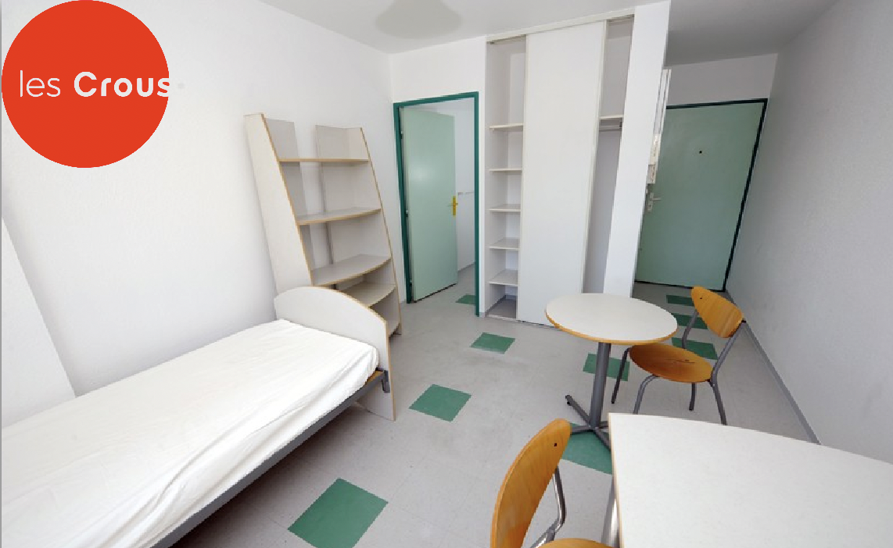

Dove Cercare
Piattaforme dedicate
Ogni lavoro ha la sua piattaforma preferita, anche se in generale le grandi aziende hanno una sezione del loro sito dedicata alla ricerca di nuovi candidati. Ve ne sono diverse che sono abbastanza conosciute e usate, tra queste ci sono Linkedin, Indeed, Monster. È bene conoscere la piattaforma del proprio Lavoro e curare la propria presenza su internet. Un profilo aggiornato, una foto adeguata, attivo, sono tutte cose che possono fare la differenza per distinguersi dagli altri.

Social
Per certi tipi di lavoro, social come facebook o siti che normalemente non fanno del job posting il loro utilizzo principale, possono rivelarsi utili. Ad esempio, facebook viene spesso usato per postare ricerche di personale per la ristorazione, o di hostess per gli eventi nelle fiere. In questi casi è bene conoscere ed iscriversi nei gruppi dove queste offerte di lavoro sono postate ed essere pronti e reattivi a rispondere quando è il momento.